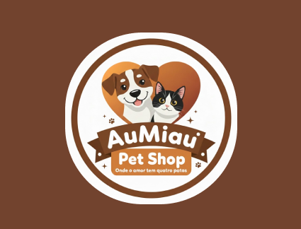

Mobile Flutter
⚡ Pokédex Mobile & Trainer Card
Aplicativo mobile interativo inspirado na franquia Pokémon com Cartão de Treinador digital, galeria de insígnias e time de batalha com GIFs animados.
Desenvolvedor Júnior em início de carreira, cursando Técnico em Desenvolvimento de Sistemas (SENAI) e com formação em Programação Web. Possuo conhecimentos práticos em lógica de programação, HTML, CSS, JavaScript, e programação em Flutter em Android Studio, além de forte capacidade de resolução de problemas, trabalho em equipe e aprendizado contínuo. Busco oportunidade como Desenvolvedor Júnior para contribuir em projetos reais, entregar código limpo e de qualidade, e evoluir tecnicamente.
Comprometido com soluções eficientes, código sustentável e arquitetura moderna de software.
Código limpo e orientado ao negócio
Desenvolvedor Júnior em início de carreira, cursando Técnico em Desenvolvimento de Sistemas (SENAI) e com formação em Programação Web. Possuo conhecimentos práticos em lógica de programação, HTML, CSS, JavaScript, e programação em Flutter em Android Studio.
Além de forte capacidade de resolução de problemas, trabalho em equipe e aprendizado contínuo, busco oportunidade como Desenvolvedor Júnior para contribuir em projetos reais, entregar código limpo e de qualidade, e evoluir tecnicamente.
Estruturação de algoritmos claros, manuteníveis e boas práticas de desenvolvimento.
Interfaces web responsivas e aplicativos em Flutter usando Android Studio.
Comunicação clara, colaboração com Git/GitHub e empatia interpessoal.
Resolução prática de problemas e dedicação constante ao aprimoramento técnico.
Ferramentas, linguagens e frameworks que utilizo para transformar ideias em software em produção.
Estruturação semântica, acessibilidade web (a11y), SEO otimizado e integração de tags modernas para interfaces ricas.
Design responsivo profissional, Flexbox, CSS Grid, animações fluidas, variáveis nativas e microinterações modernas.
ES6+, manipulação do DOM, requisições assíncronas (Fetch, Async/Await), lógica de negócios e interatividade web dinâmica.
Desenvolvimento back-end estruturado, processamento seguro de formulários, sessões, integração com banco e APIs REST.
Automação de processos em TI, scripts de produtividade, manipulação e análise de dados, lógica computacional e APIs.
Modelagem relacional de bancos de dados, criação de esquemas, consultas SQL complexas, chaves estrangeiras e integridade.
Desenvolvimento de aplicativos móveis multiplataforma (Android & iOS) em Android Studio com interfaces reativas e consumo de APIs.
Prototipagem interativa, criação de wireframes, design de interfaces (UI), testes de usabilidade e experiência do usuário (UX).
Versionamento profissional de código, branches, Git Flow, resolução de conflitos, pull requests colaborativos e GitHub Pages.
Aplicações reais desenvolvidas com foco em arquitetura robusta, usabilidade e alto impacto técnico.
Aplicativo mobile interativo inspirado na franquia Pokémon com Cartão de Treinador digital, galeria de insígnias e time de batalha com GIFs animados.

Sistema web completo para gestão de petshop com controle de estoque, caixa/vendas, cadastro de produtos e dashboard com indicadores em tempo real.
Cursos concluídos, formações técnicas e certificações profissionais atestando competências em desenvolvimento, inteligência artificial, cibersegurança e inovação.
Formação técnica com foco em desenvolvimento web, lógica aplicada, banco de dados, infraestrutura de redes e deploy de sistemas.
Algoritmos avançados, estruturas de dados otimizadas, modularização de código, orientação a objetos e engenharia de software.
Criação de páginas dinâmicas, semântica web, estilização moderna, JavaScript assíncrono e conexão com serviços back-end.
Rotinas operacionais de TI, configuração de ambientes, protocolos de comunicação, navegadores e utilitários web.
Conceitos fundamentais da computação, estrutura operacional de computadores, gerenciamento de arquivos e segurança de usuário.
Conceitos essenciais de IA, modelos generativos, redes neurais, machine learning e integração de soluções inteligentes.
Diretrizes éticas para algoritmos, viés de dados, privacidade, responsabilidade social e transparência em sistemas automatizados.
Vetores de ataque, engenharia social, proteção de ativos digitais, criptografia e mitigação de vulnerabilidades em redes.
Proteção de privacidade do internauta, pegada digital, direitos autorais na web, segurança da informação e convivência online.
Internet das Coisas (IoT), computação em nuvem, integração de sistemas ciberfísicos, big data e automação de processos industriais.
Práticas ambientais, responsabilidade social corporativa e governança ética nos ecossistemas empresariais modernos.
Mapeamento de emissões de gases de efeito estufa, matrizes energéticas limpas, crédito de carbono e transição energética sustentável.
Ciclo de vida sustentável de produtos, redução de resíduos, reutilização inteligente de materiais e criação de valor econômico circular.
Design Thinking, ideação ágil, validação de hipóteses de negócio, proposta de valor e mentalidade inovadora.
Criação e edição de planilhas eletrônicas, fórmulas essenciais, formatação condicional, operadores e gráficos estatísticos.
Competência técnica no manuseio de dados tabulares, funções lógicas, cálculos automatizados e estruturação de tabelas corporativas.
Formatação de textos conforme normas técnicas, diagramação de relatórios, estilos de parágrafo, tabelas e sumários automáticos.
Design e estruturação visual de apresentações executivas, recursos audiovisuais, animações funcionais e storytelling corporativo.
Comunicação empática, resolução ágil de conflitos, escuta ativa, inteligência relacional e excelência em relacionamento com o cliente.
Normas de segurança, identificação de riscos operacionais, prevenção de acidentes de trabalho e ergonomia ocupacional.
Vocabulário técnico para literatura de tecnologia, documentações de APIs, terminologia de software e comunicação essencial.
Estou disponível para oportunidades profissionais, desenvolvimento de projetos e parcerias em tecnologia. Conecte-se comigo por um dos canais diretos abaixo:
Envie propostas, mensagens e convites para oportunidades técnicas.
Contato imediato via mensagem no WhatsApp ou ligação telefônica direta.
Conexões profissionais, atualizações de carreira e recomendações.
Veja meus códigos, contribuições, commits e projetos de código aberto.